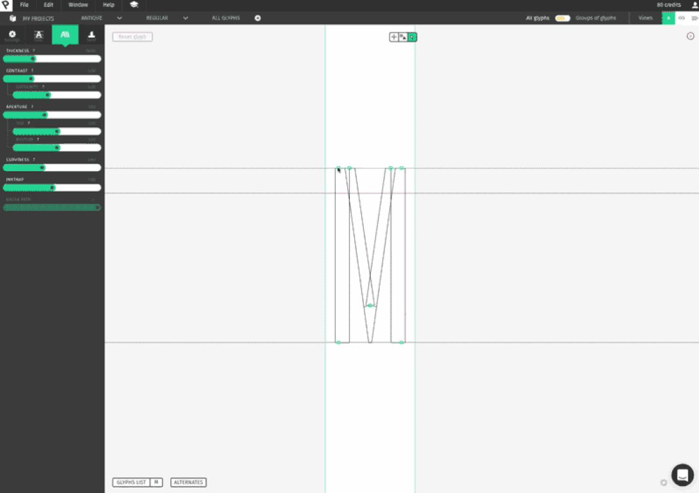
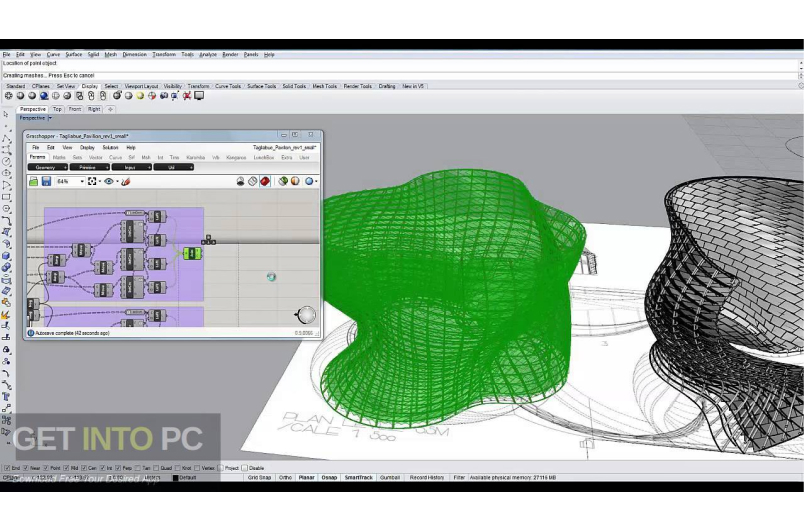
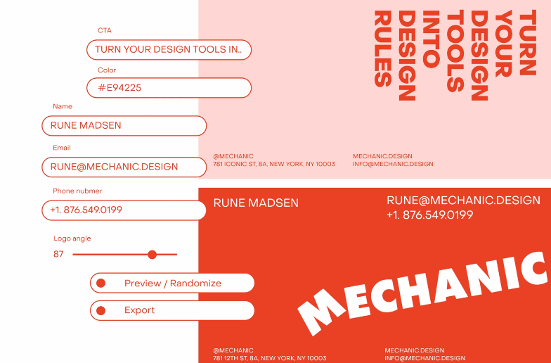
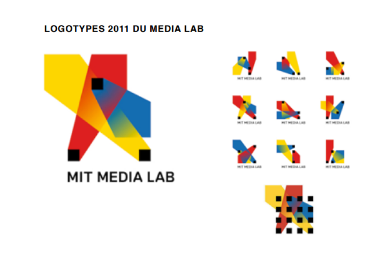
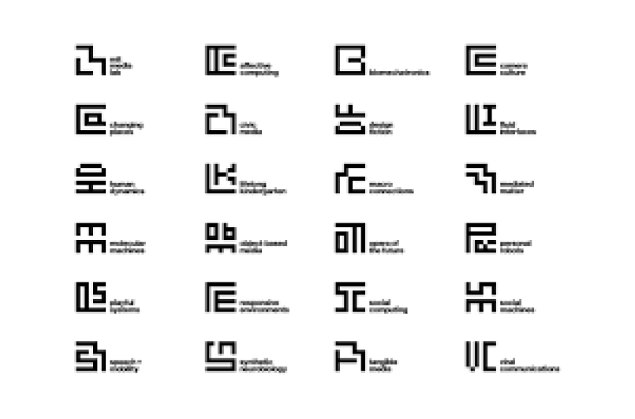
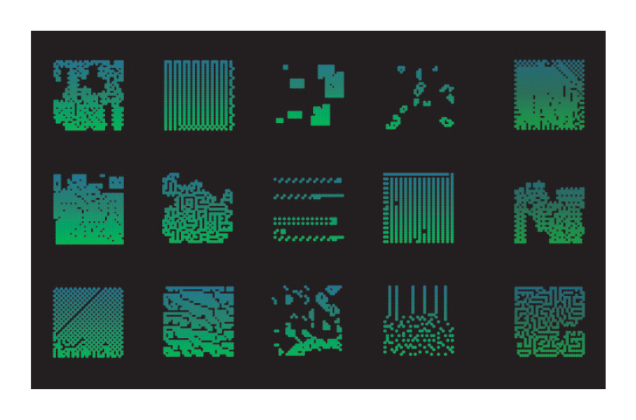
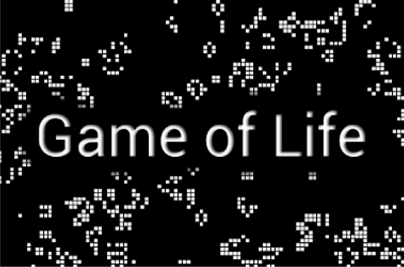
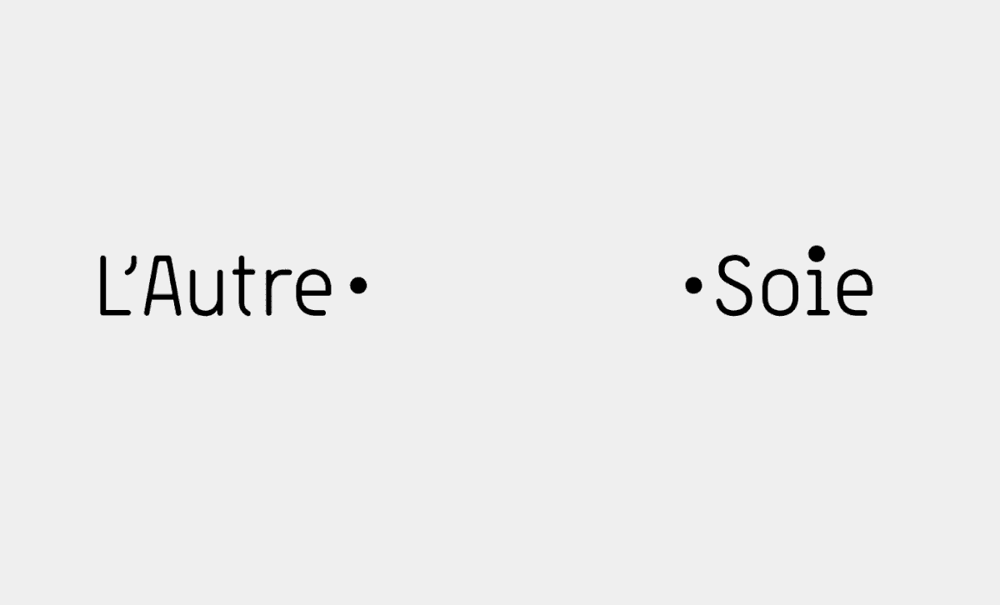
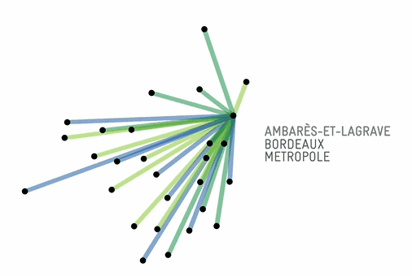

Abstract
In this thesis, I will talk about parametric design. Design using the computer to calculate and transcribe the thoughts of the creator. The creator uses the computer to create his desire, and he will add to that variable, data that can vary on different value. The computer will use algorithms to generate all possible and unimaginable variations. Then thereafter, the user will be able to see the different variations and that by different means (switch, button, hand movement, ...), to choose if it was the intention, if the variations correspond to these desires and of course if changes are to be made and so start the process again.
Then I talk about the creative potential of parametric design. It allows to test several variations of the same idea and that quickly from the movement that we know a little code and that we have the imagination. And more we can vary the way of parameterization, by standard means: use of switch, button, and other to see the different variation. Or we can be inspired by more different ways of creation, by the hand movements we need every day when using our phone (zoom, scroll, swap, several fingers allowing several actions). Or even with a gamepad, vr, etc. I am interested in the creation of logotypes, identities of different companies or groups that have significant variations depending on the use that is made of them. The way in which these different logos are transmitted is also important. The user can be given full access to the entire collection and choose the appropriate one. Either the designer will create a parametric design or he will set the limits of it, and this, either the client himself will create his design or he will use third parties to create it.
Parametric design allows for many known and yet to be discovered possibilities; for example, I would like to create software that allows the user to implement code, and then choose how it is accessible and modifiable by a third person.
Introduction
Dans ce mémoire, je vais m'intéresser un design fait par computationnelle ou plus spécifiquement celui fait a l’aide de l’ordinateur. Et notamment le design paramétrique et génératif qui en font parties, que je vais traiter ici. Actuellement, beaucoup de logiciels et de framework qui permettrait de générer des visuels, qui vont être utilisés dans les productions, cela leur permet de réduire le temps de création le reléguant à l'ordinateur et laissant juste le choix à l'utilisateur. Le design génératif se base sur du codage, qui va traiter par l'ordinateur généré une image ou un visuel. Le code Traité par l'ordinateur va utiliser des paramètres et de l'aléatoire (souvent utiliser dans le design génératif) afin de proposer un visuel final pour le designer. Mais cette créativité, proposée par l'ordinateur, n'est pas souvent ce que veut le designer. Cela peut être une mauvaise réalisation de ca demande, ou bien finalement ce n’était pas ce qu’il rechercher lors de la création. Car l’ordinateur est programmé pour faire ce qu’on lui demande, un aléatoire contrôlé est proposé mais l’envie et l’idée du designer lors de la création ce peut d’être différente et ainsi éloigné du résultat propose.
La créativité, c'est popularisé lors de l'industrialisation. Beaucoup de métiers ont alors pris une part de créativité jusqu'à là uniquement attribué à l'art et à l'artiste, car la production étant plus simple, la possibilité de donner un côté beau à ce qui nous entoure devient alors une seconde priorité. Rendre beau ce qui est utile, lui donner une esthétique et des convictions à travers ce qu'il dégage. La créativité vient ethnologiquement du termes "creo","creas", "creare" signifier produire, faire naître, etc. De sortir quelque chose de spontané et qui va inspirer des émotions à différentes personnes. La créativité est l'idée de créer quelque chose de nouveau, d'unique qui sort de ce qui l'entoure et qui exprime les émotions de son créateur qu'il veut transmettre à travers.
Le design paramétrique offre lui la possibilité d'être entièrement modifiable par le designer lors de la création. Basé sur la pensée algorithmique, il permet l'expression créative grâce à des paramètres et de règles qui, ensemble, définissent, encodent et clarifient la relation entre l'intention de conception du designer et la réponse de conceptions faites par l'intermédiaire de l'ordinateur. Par des paramètres préétablis et pouvant si besoin d'être modifié ou augmenter par de simples connaissances en codage dans les langages les plus courants, de crée un visuel ou l'humain et maître de la création et l'ordinateur son outil. Ce qui offre un énorme potentiel créatif, permettant de gagner en temps considérable lors de la production de visuels.
En quoi le design paramétrique a un fort potentiel créatif pour le graphisme ?
Ainsi, nous allons voir qu'est ce que le design paramétrique, ce qu'il offre et ses utilisations actuellement dans différemment domaine touchant au design. Ensuite de son potentielle créatif dans le graphisme (typographie, print, logotype), et de comment il permet de porter les idées et la créativité donner par son concepteur. Et finalement de l'implication du client dans la création de celui-ci.
I. Qu’est-ce que le design paramétrique ?
A. Différence design génératif et design paramétrique
La numérique offre de grande possibilité de création, plus rapide et performante que d'ancienne méthode traditionnelle dans le design. Notamment la visualisation final, et des différentes variations de celle ci, ou la modification rapide et direct. crée une typographie a la mains vas prendre des jours entier, faire et refaire depuis zéro jusqu'à l’intention voulu. Grace a l’ordinateur cela peut être considérablement accélérer, de par la visualisation et la transmission des valeurs voulu a l’ensemble de la typographie par exemple.
Dans le cycle de création du design génératif, le designer va coder ses intentions pour laisser la machine (ordinateur) calculer et crée le visuel, de plus si celui-ci n'est pas le résultat escompté, il va devoir répéter cette opération jusqu'à obtenir le résultat.
Pour le paramétrique design le cycle de création et différents, le designer va coder puis l'ordinateur va permettre au designer de modifier son visuel en direct grâce à divers moyens et paramètre défini en amont de la création.

Un exemple illustrant bien cette idée, contrairement à la création d'une typographie par les méthodes traditionnelles, de modifier lettre par lettre en appliquant les points que l'on veut modifier, et finalement trouver que ce n'était pas ce que l'on voulait et recommencer. Le logiciel Prototypo toujours en cours de création, permettrait de modifier une typographie intégralement, de modifier des points qui s'appliqueraient à l'ensemble de la typographie, ou à une lettre en particulier. Pour les typos avec une graisse possédant des pleins et des délié de les modifier, grâce à des nodes (liens entre les points pouvant être des courbes) et de les appliquer au reste de la typographie de façon intelligente.
B. Une utilisation de plus en plus courante
Le design paramétrique est utilisé dans plusieurs domaines. Notamment, les prémices de celui-ci se sont fait voir dans l'architecture et dans le design d'objet. L'un des premiers designs paramétriques fut celui de l'église de Colònia Güell, créé par Antonio Gaudi entre 1898-1914 (Fig 2), qui avant l'apparition d'ordinateur utilisé des fils auquel sont accrochés des poids qui va représenter la forme de la structure, le tout au-dessus d'un miroir afin d'avoir une vision finale de l'œuvre. Son système lui permettait de modifier certains fils, qui eux-mêmes modifient les arches et ligne sur le reste de la structure. Luigi Moretti fut un des premiers à définir le procédé d'architecture paramétrique développé au sein de l'Institut de Recherche Opérationnelle et d'Urbanisme Mathématiques Appliquées. À l'occasion d'une exposition à la Triennale de Milan, ou il présentera différents modèles de stades qu'il aura conçus selon les paramètres établis de son architecture paramétrique. Maintenant, beaucoup de logiciels appliquent de façon numérique le principe du paramétrique afin de concevoir diffèrent objet et architecture tels que Grasshopper 3D (Fig 3) un des plus connus dans ce domaine. Au niveau du graphisme, cet aspect du design arrive tardivement, actuellement, elle en est à ses débuts, beaucoup de gens tâtonnent encore, expriment des principes et des idées. L'idée de paramètre pour la création plastique parait quelque peu opposée à son idée de liberté, cependant le design s'applique grâce à des codes et ainsi si on arrive à transposer ces codes sous la forme de paramètre cela ouvrirait de grande opportunité pour celui-ci.
 Fig 2 | Antonio Gaudi 1852-1926, Fils d'un architecte, il va être le créateur de l'église de Colònia Güell (1898 - 1914) en utilisant un principe unique et inédit à l'époque. Il va être le précurseur du design paramétrique dans l'architecture.
Fig 2 | Antonio Gaudi 1852-1926, Fils d'un architecte, il va être le créateur de l'église de Colònia Güell (1898 - 1914) en utilisant un principe unique et inédit à l'époque. Il va être le précurseur du design paramétrique dans l'architecture.
Fig 3 | Logiciel Grasshopper: logiciel utilisant une programmation visuel et une visualisation assistée de conception par le logiciel Rhinoceros 3D
II. Le potentiel créatif du design paramétrique
A. La liberté dans le système paramétrique
1. S’inspirer du dessin pour paramétrer
Lors de la création du design (Visuel, typographie, etc. ) le designer va devoir modifier son visuel de plusieurs façons, habituelle avec clavier et souris. Mais on peut utiliser des mouvements afin de créer par des gestes naturels, comme ceux utiliser pour se déplacer dans un téléphone comme le swipe, utilisation des doigts, un ou plusieurs afin de choisir différentes options qui par la suite pouvant être déplacé, tourner ou multiplier. Comme une extension de la main. Quel serait les gestes les plus approprier et convenable au utilisateur, modifiable pour convenir à une expérience optimale.

Le studio Schultzschultz est un des pionniers dans cette recherche du mouvement et d'outil dans la création paramétrique. En dehors de leurs projets professionnels s'axant déjà dans cette recherche de la nouveauté. Il alimente un Instagram montrant leurs créations. On peut les voir notamment utiliser le tactile afin de modifier des visuels en dupliquant, déplaçant ou créant des pixels (Fig 5). Ou bien encore utiliser une manette, principe de plus en plus en vogue avec la nouvelle génération et les jeux vidéo (Fig 6), permettant de modifier et crée une typographie unique en modifiant précisément des points clés de la typographie, largeur, longueur, rotation de certaines barres de la typographie.
 Fig 5 | Essai typograpique avec manipulation a la manette de jeu vidéo.
Fig 5 | Essai typograpique avec manipulation a la manette de jeu vidéo.
 Fig 6 | Essai modification d'image par déplacement/déformation grâce tactile
Fig 6 | Essai modification d'image par déplacement/déformation grâce tactile
2. Insuffler une plasticité dans le paramétrage
De plus, la conception dans le design demande une plasticité, d'une souplesse dans là l'élaboration. Ainsi le framework open source Mechanic Design offre la possibilité de passer par des paramètres afin de créer ses visuels, et d'outils. En partant par des saisies de texte, couleurs et image, ils vont les organiser dans une page puis pouvant entre soi positionner soient laisser l'ordinateur présenter différente la proposition à partir des infos originelle. Mais il laisse aussi la possibilité de codée par soi-même ses propres animations et paramètre applicable. Ainsi, il laisse la liberté et une plasticité importante dans la création.

B. Singulariser, mieux cibler son propos
Pour la suite, dans le paramétrique design, je vais me concentrer dans la création de logotype. La première impression donnée par une entreprise ou un groupe passent par son logo et sont identité graphique, qui va insuffler les idées, envies et convictions qu'ils veulent transmettre (les couleurs, les formes influes grandements sur nos choix). Un logotype possède plusieurs variations à partir d'une même base reconnaissable. L'implication de l'utilisateur va aussi modifier la création du logotype.
1. Implication faible de l'utilisateur
Il peut y avoir une implication très faible de l'utilisateur, qui n'aura que la possibilité de choisir en suivant les indications données par le designer. Le logotype du MIT Media Lab a été créé et remodifie en 2014 (Fig 9)(première version faite en 2011) (Fig 8). Se basant sur une grille de 4 sur 4 carrés de l'ancien logotype, pour la nouvelle version réalisée par le studio Pentagram, et ils vont créer une typographie qui va évoluer dans l'espace prédéfini (sous la forme d'axe horizontal et vertical relié) chaque version va être générée pour chacune des 28 sections, ainsi le MIT Media Lab n'a plus qu'à utiliser le logotype approprié en fonction de la section et des dispositions données par le designer.
Fig 8 | Première version faite en 2011 par E Roon Kang and Richard The, Il possède plus de 40 000 variations sur une grille de 4x4. Imposant les règles de grille qui vont être utilisées dans celui fait en 2014.
Fig 9 | Version faite en 2014 par le studio Pentagram, utilisant la base du logotype de 2011, dans lequel va être créée une typographie unique.
2. Implication Forte de l'utilisateur
L'implication peut ainsi être plus forte qui pourra grâce à un logiciel ou autre de modifié et de crée le logotype le plus approprié à ces besoins. Michael Schmitz en 2006 (Fig 10) a proposé un logo évolutif pour l'institut Max Planck sur la recherche Cellulaire. Et ainsi, reprenant l'idée de cellule vivante, il a créé un logiciel générant des cellules comme une boîte à petri qui vont interagir les unes avec les autres afin d'évoluer, vivre et mourir. À la manière du jeu "Conway's game of life" (Fig 11). Ainsi, l'utilisateur va pouvoir créer sa propre boite de petri, modifiant diffèrent paramètre donné par le designer suivant des règles mathématiques, comme la chaleur, durée de vie, quantité, etc. . Chaque logotype est unique, évolutif et utilisable selon les envies du client.
Fig 10 | Le logotype évolutif crée en 2006 par Michael Schmitz, se basant sur l'évolution de la vie d'une cellule. Elles vont évoluer entre elles, et possèdent même la capacité de créer un nouveau logotype grâce à 2 parents logotypes qui vont transmettre leur caractéristique.
Fig 11 | Jeu: Game of life crée en 1970. jeu simulant des cellules qui vont suivre des règles afin d'etre activée et desactivé en fonction de son entourage evoluant de géneration en géneration dans une gris orthogonal bidimensionnelle.
3. Implication extérieure
L'implication se peut d'être extérieure au designer et au commanditaire, demander l'action de tierces personnes. Le Studio Grapheine a créé un logotype se basant sur cette envie de participation. Une typographie laissant a l'utilisateur la possibilité de relier les 2 mots, "L'autre" et "soie", en faisant un tracé, avec un choix de couleurs prédéfini. La suite, elle est laissée à la collectivité, la créativité de chacun augmentant la quantité de logos disponible pour l'agence.


III. Le design paramétrique dans les mains del'utilisateur/du client
A. La Sélection
Pour le système laissant uniquement le choix au client de choisir le bon logotype après que l'entièreté de ceux-ci ont été générée. La question de la création est laissée entièrement au designer (ou studio de design). Mais aussi la façon dont le client va pouvoir accéder au bon logotype. Ainsi, il peut créer un système de filtre, qui va permettre au client de par exemple dans celui du logotype de Bordeaux de sélectionner la ville ou village de la commune de Bordeaux métropole et de trouver celui qui répond à ce critère. Mais il, peut avoir d'autres possibilités de choisir la couleur ou bien aussi si celui-ci possède un texte de savoir si dans les possibilités, il peut être en dessous du visuel ou a droit, à gauche ou autre. Il peut y avoir aussi l'exploration libre ou l'utilisateur aurait la liste complète et devrait choisir lui-même en parcourant l'entièreté de ceux-ci. Dans celui de Bordeaux, la totalité des logotype est listé par catégorie, (teinte de gris, 2 couleurs ou bien multicolores) ainsi que ca bonne utilisation. Il reste donc plus qu’a choisir celui qui correspond parfaitement a ces exigence.

B. La Géneration
Pour les logotypes paramétriques ou l'utilisateur a la possibilité de modifier par lui-même, sous les consignes (paramètre préétabli) du designer, d'autre question ce pose dans la manière ou l'utilisateur interagi. S'il a la possibilité de modifier des paramètres, lesquels sont accessibles à l'utilisateur afin de ne pas dénaturer l'identité donnée par le designer. Le studio Grapheine a créé un système pour l'entreprise le bureau des possibles avec l'aide de Kévin Vennitti qui a développé ce module. Ce module permet de crée des visuels interactifs composés de multitude de points qui vont former une image, mais étaient soumis à une gravité lors de l'approche de la souris. Le Bureau des possibles avait la possibilité de choisir le visuel qui était affiché ainsi que la couleur d'une palette prédéfinie, ils ont ainsi la possibilité de modifie tout en gardant la base leurs identités, mais d'apporter leurs créativités au visuel.

Mais il peut y avoir aussi la possibilité au paramètre d'être plus naturelle, de s'appuyer sur des gestes communs, notamment ce servant du tactile de plus en plus utilisé de par l'utilisation de téléphone et tablette afin de déplacer, modifier directement le visuel.
C. La libre-contrainte
Et il y a la possibilité de la libre contrainte, le designer va créer un visuel paramétrique ou il va poser les limites de celui-ci, et cela, soi au client en lui-même de crée son visuel ou bien d'utiliser des tierces personnes afin de le créer. Cette méthode ne permet pas d'avoir des points identiques en fonction des différents systèmes créés. Mais offre une créativité contrôlée et différente que la plupart des autres systèmes.
Conclusion
Dans le design, l'ordinateur a une place de plus en plus importante, attirant les designers cherchant de la nouveauté ainsi, ils ont commençaient à s'intéresser à des moyens de transposer leur créativité tout en gagnant en efficacité dans leur travail. Le design paramétrique en est un de ceux qui offrent une grande source de créativité, contrairement à ce qu'il peut laisser paraître. La modification de visuels grâce à des paramètres et des moyens de modification imitant des gestes et des principes naturels, elle permet de transposer ces idées grâce à l'intermédiaire de l'ordinateur comme outil. De gagner en efficacité et en temps dans la création, car générant plusieurs visuels rapidement à partir d'un code unique selon plusieurs paramètre variable voulu et contrôler par le designer.
Le design paramétrique permet ainsi beaucoup de possibilités connues et encore à découvrir ; ainsi, par la suite, je voudrais créer un outil qui permettrait à l’utilisateur d’implémenter du code, et qui par la suite, on pourrait choisir la façon d’accessibilité de celui-ci et la modifiabilité par une tierce personne..
Bibliographie
- Prototypo | Design custom fonts that perfectly fit your needs
- Conception paramétrique - gaz.wiki
- Schultzschultz
- Mécanicien (mechanic.design)
- MIT Media Lab’s Brilliant New Logo Has 40,000 Permutations (fastcompany.com)
- MIT Media Lab (pentagram.com)
- Evolving Logo | Michael Schmitz (interaktivegestaltung.net)
- Conway's Game of Life - Wikipedia
- L'Autre Soie, a participative visual identity! (grapheine.com)
- Utiliser le logo de Bordeaux Métropole - Bordeaux Métropole (bordeaux-metropole.fr)
- Generative visual identity for Bordeaux Métropole (grapheine.com)
- Bureau des Possibles - Visual identity (grapheine.com)